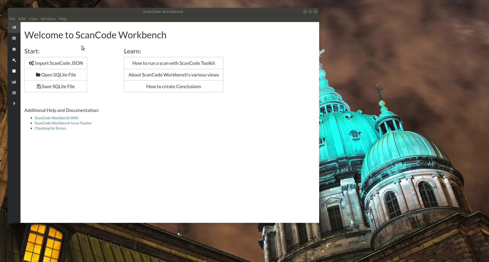

Importing and Exporting a JSON File¶
Import a ScanCode JSON File¶
We have provided a set of sample scans that you can quickly review in ScanCode Workbench in order to get a sense of its functionality and the types of information captured by a scan. The samples are located at https://github.com/nexB/scancode-workbench/tree/develop/samples.
To import a ScanCode JSON file:
Open the
Filemenu and selectImport JSON File(keyboard shortcut:Ctrl+Ior⌘+I).In the dialog window that opens, navigate to the JSON file you want to import, select the file and click
Open.You will then be prompted to choose a filename and location to save the JSON file as a SQLite database file. Add a filename, select the folder in which you want to save the SQLite database file, and click
Save.ScanCode Workbench will then create a SQLite database file from your JSON file, indicated by the status message “Creating Database …”
Once the process has finished, the status message will be replaced by an expandable code tree and, to the right of the tree, a table displaying provenance information generated by ScanCode.
Export a JSON file¶
To export a JSON file:
Select the
Filemenu and then selectExport JSON File(keyboard shortcut:Ctrl+Eor⌘+E).In the dialog window that opens, add a name for the file, navigate to the directory in which you want to save the file and click
Save.